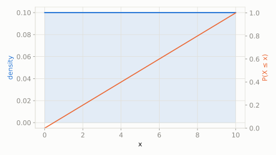

A spinner arrow can land anywhere at all between 0 and 10, with no spot favored over any other.
What's the chance the arrow lands somewhere between 3 and 5?
scipy.stats.uniform
Any value in a range is equally likely, and there are infinitely many possible values -- so unlike its discrete cousin, no single value has positive probability; only *intervals* do. It's also the universal building block: feeding Uniform samples through a distribution's inverse CDF is literally how computers generate random draws from any other distribution.
| parameter | default used here | meaning |
|---|---|---|
loc | 0 | lower bound of the range |
scale | 10 | width of the range (upper bound = loc + scale) |
A spinner arrow can land anywhere at all between 0 and 10, with no spot favored over any other.
What's the chance the arrow lands somewhere between 3 and 5?
scipy.statsimport scipy.stats as stats
import numpy as np
dist = stats.uniform(loc=0, scale=10)
print('P(3 <= X <= 5):', round(dist.cdf(5) - dist.cdf(3), 4))